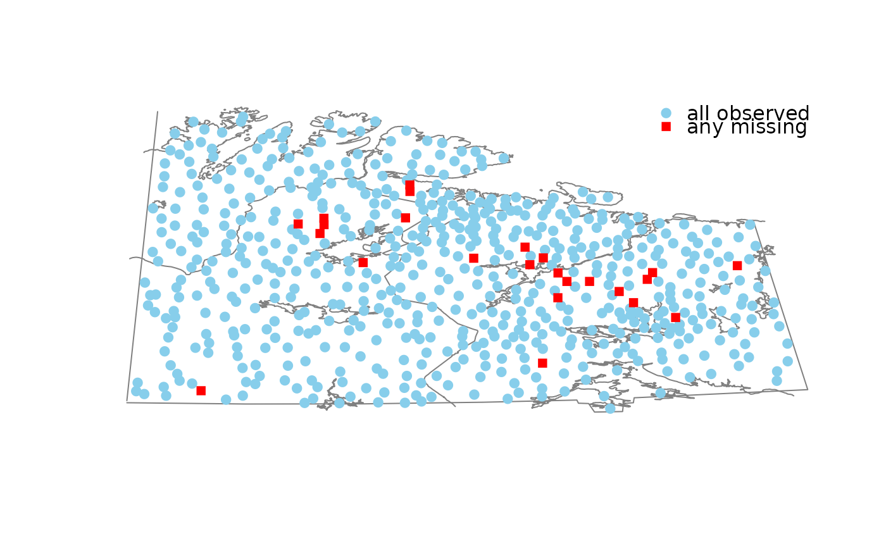
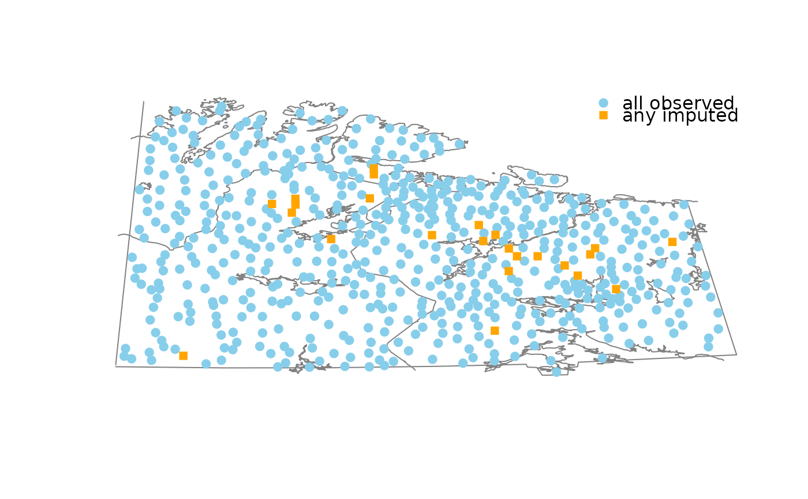

Map of observed and missing/imputed values.
mapMiss( x, coords, map, delimiter = NULL, selection = c("any", "all"), col = c("skyblue", "red", "orange"), alpha = NULL, pch = c(19, 15), col.map = grey(0.5), legend = TRUE, interactive = TRUE, ... ) # S3 method for data.frame mapMiss( x, coords, map, delimiter = NULL, selection = c("any", "all"), col = c("skyblue", "red", "orange"), alpha = NULL, pch = c(19, 15), col.map = grey(0.5), legend = TRUE, interactive = TRUE, ... ) # S3 method for survey.design mapMiss( x, coords, map, delimiter = NULL, selection = c("any", "all"), col = c("skyblue", "red", "orange"), alpha = NULL, pch = c(19, 15), col.map = grey(0.5), legend = TRUE, interactive = TRUE, ... ) # S3 method for default mapMiss( x, coords, map, delimiter = NULL, selection = c("any", "all"), col = c("skyblue", "red", "orange"), alpha = NULL, pch = c(19, 15), col.map = grey(0.5), legend = TRUE, interactive = TRUE, ... )
| x | a vector, matrix or |
|---|---|
| coords | a |
| map | a background map to be passed to |
| delimiter | a character-vector to distinguish between variables and
imputation-indices for imputed variables (therefore, |
| selection | the selection method for displaying missing/imputed values
in the map. Possible values are |
| col | a vector of length three giving the colors to be used for observed, missing and imputed values. If a single color is supplied, it is used for all values. |
| alpha | a numeric value between 0 and 1 giving the level of
transparency of the colors, or |
| pch | a vector of length two giving the plot characters to be used for observed and missing/imputed values. If a single plot character is supplied, it will be used for both. |
| col.map | the color to be used for the background map. |
| legend | a logical indicating whether a legend should be plotted. |
| interactive | a logical indicating whether information about selected observations can be displayed interactively (see ‘Details’). |
| ... | further graphical parameters to be passed to
|
If interactive=TRUE, detailed information for an observation can be
printed on the console by clicking on the corresponding point. Clicking in
a region that does not contain any points quits the interactive session.
M. Templ, A. Alfons, P. Filzmoser (2012) Exploring incomplete data using visualization tools. Journal of Advances in Data Analysis and Classification, Online first. DOI: 10.1007/s11634-011-0102-y.
data(chorizonDL, package = "VIM") data(kola.background, package = "VIM") coo <- chorizonDL[, c("XCOO", "YCOO")] ## for missing values x <- chorizonDL[, c("As", "Bi")] mapMiss(x, coo, kola.background)#> #> Click on a point to get more information. #> To regain use of the VIM GUI and the R console, click in a region that does not contain any points. #>## for imputed values x_imp <- kNN(chorizonDL[, c("As", "Bi")]) mapMiss(x_imp, coo, kola.background, delimiter = "_imp")#> #> Click on a point to get more information. #> To regain use of the VIM GUI and the R console, click in a region that does not contain any points. #>